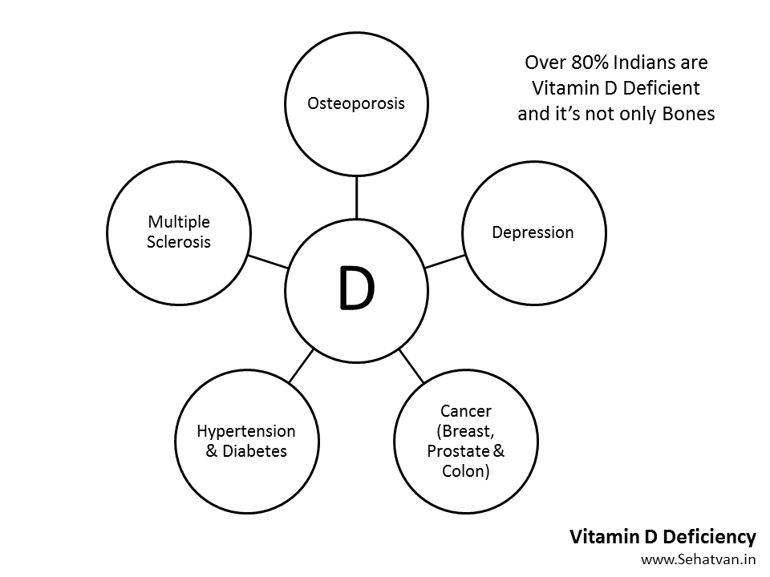
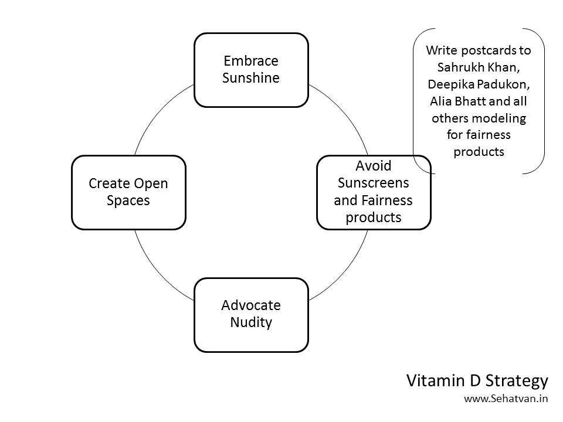
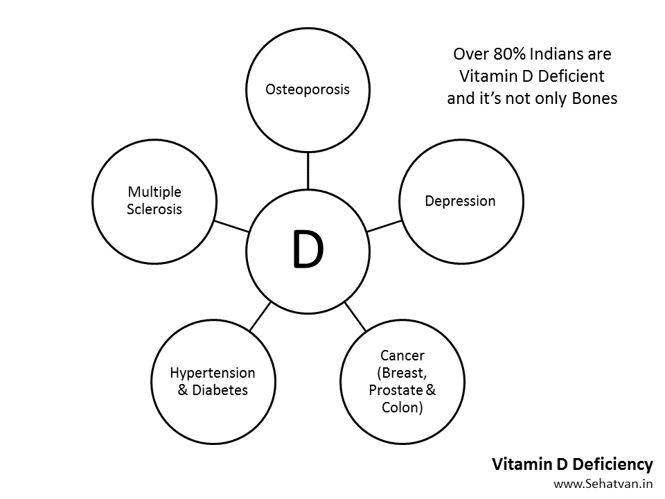
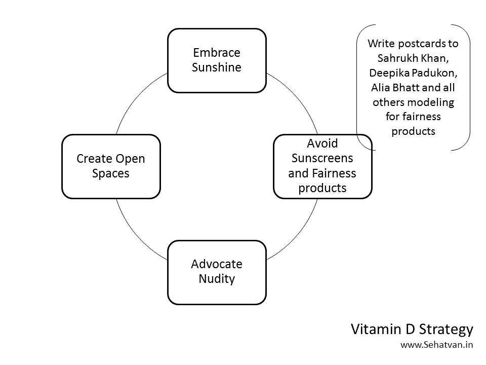
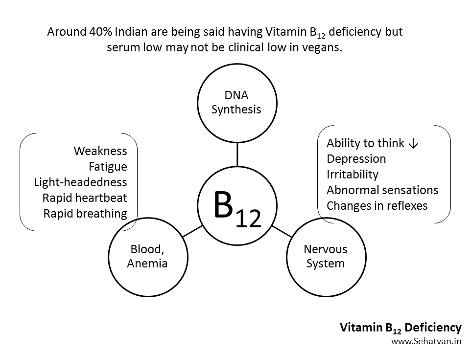
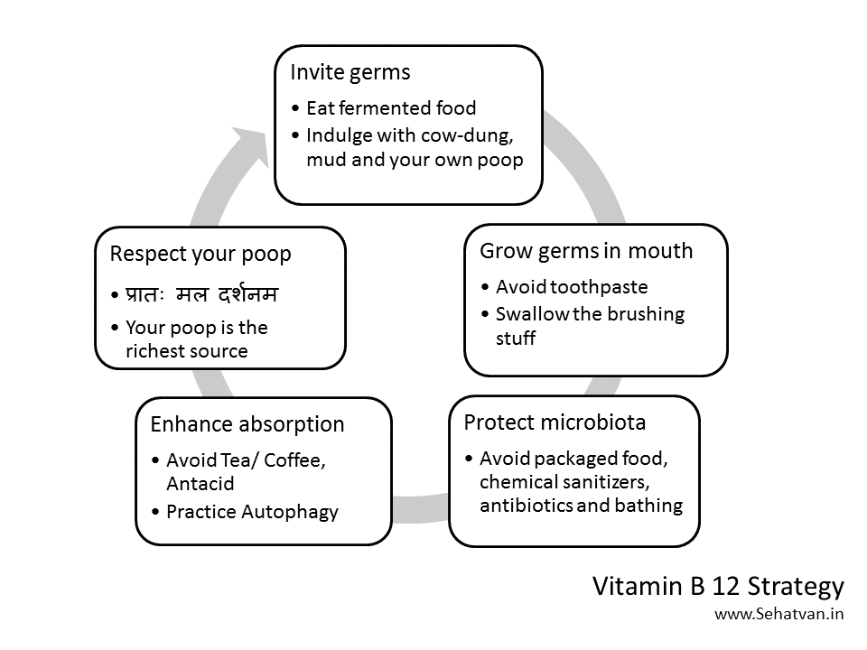
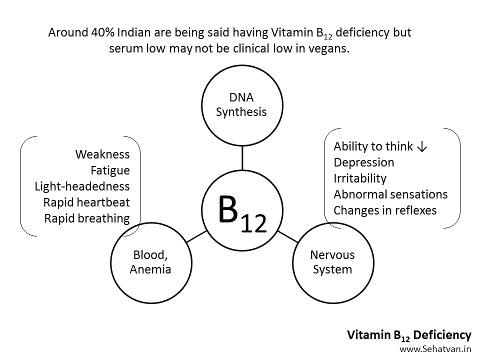
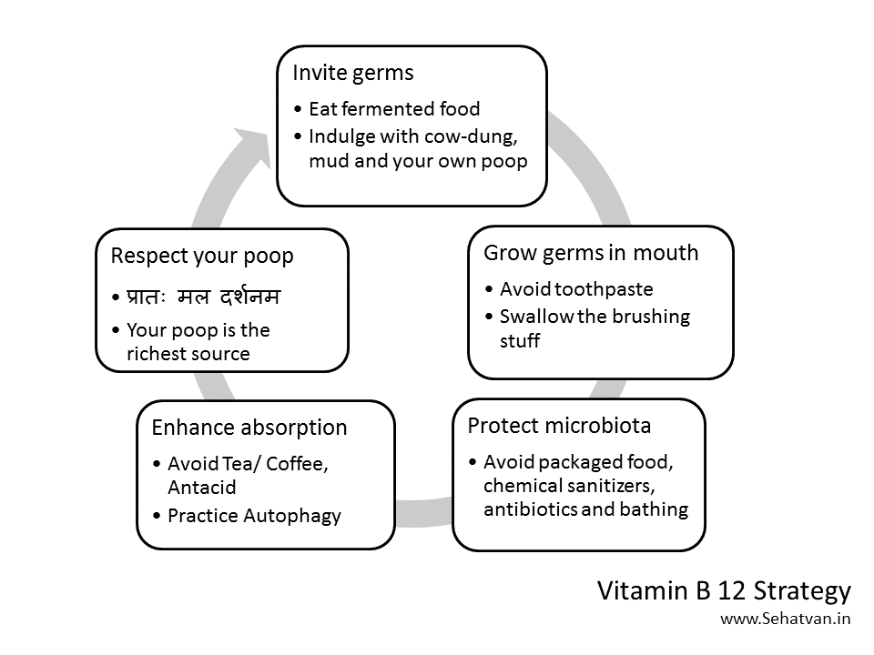
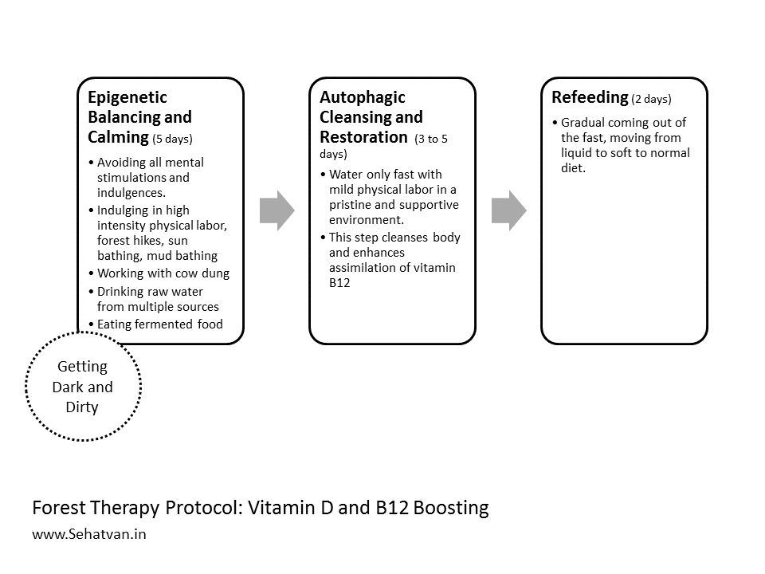

Take health, drop diseases
नमस्ते !

प्रत्येक प्राणी में सेल्फ-रिपेयर की क्षमता होती है, गड़बड़ लाइफ़स्टाइल इसे कमजोर कर देती है। इससे हमारी सेहत-आयु कम हो जाती है। सेहत-आयु जिंदगी का रोग-मुक्त हिस्सा है। सेहतवन आश्रम को जिंदगी में मजबूती और जोश लाने के लिए तैयार किया गया है।
Forest Therapy Module:
Vitamin D and B12 Boosting
Recommended Duration:
A) At Sehatvan (Forest Protocol):
7 to 10 days
Fee Contribution:
Indian Participants:
Rs 15,000
International Participants:
USD 350
Refund Policy:
Cancellation (only upto first 2 days of participation)
Rs. 5000/person is deducted and the balance is refunded.
Change of date:
subject to availability and updated fees.
Cancellation (only upto first 2 days of participation)
Rs. 5000/person is deducted and the balance is refunded.
Change of date:
subject to availability and updated fees.
Know More
What is this module about?
Fitness Protocol
Forest Fitness modules aim at enhancing life strength in all individuals. They are designed to boost
the stamina and immunity at one hand and slow down the aging process at the other. This first module
of the Forest Fitness focuses on boosting Vitamin D and B12. These two Vitamins are crucial for many
things. Too many people suffer from their deficiency. Hence, rather than waiting for the deficiency
to surface, everyone should try keeping them in a boosted state. It could be an intelligent move to
getting them toned-up, at least once in a year, in a forest. It is in the forest that these exist in
abundance.
Vitamin D and B12 deficiencies are alarmingly high in many countries, with the most severe situation being in India. Some recent estimates suggest that 70 to 90% Indians are Vitamin D deficient while over 40% are Vitamin B12 deficient. The deficiency of these Vitamins is a perfect example of human foolishness as no other species suffers from it. Nature has provided them in abundance. Vitamin D is formed by the UV rays of sunshine in the skin itself. B12 is produced by a large number of germs. Since we have been talking about Vitamin D in earlier modules too, we will not go into much of its technicalities; we will talk more of the practicalities. While w.r.t. B12 we will try to dig some technicalities as well.
What is Vitamin D deficiency?
Vitamin D and B12 deficiencies are alarmingly high in many countries, with the most severe situation being in India. Some recent estimates suggest that 70 to 90% Indians are Vitamin D deficient while over 40% are Vitamin B12 deficient. The deficiency of these Vitamins is a perfect example of human foolishness as no other species suffers from it. Nature has provided them in abundance. Vitamin D is formed by the UV rays of sunshine in the skin itself. B12 is produced by a large number of germs. Since we have been talking about Vitamin D in earlier modules too, we will not go into much of its technicalities; we will talk more of the practicalities. While w.r.t. B12 we will try to dig some technicalities as well.
Let’s began with Vitamin D. This sunshine Vitamin is primarily responsible for the
assimilation of Calcium. Apart from that, its many more functions are being discovered. The
deficiency of this Vitamin is being considered as the prime cause of ever-increasing depression in
humans. This Vitamin plays an important role in cancer prevention, particularly in breast cancer,
prostate cancer and colon cancers. These three being the most widely occurring cancer conditions
too. Apart from this, Vitamin D has been found having beneficial role in prevention and
too. Apart from this, Vitamin D has been found having beneficial role in prevention and reversal of
Diabetes, Hypertension and Multiple Sclerosis
too. Hence, Vitamin D isn’t only the bone issue, it is
much more. And it is irony that almost whole humanity is suffering from its deficiency; whereas, at
least in countries like India, no one should.
 Individuals can get their Vitamin D by exposing themselves to the sunshine. UVB rays found in sunshine interact with the Cholesterol present in our skin to make the Vitamin D. Yet, there are some limitations to this. These rays aren’t found in morning and evening suns. These rays cannot pass through glass layers and clothes. Hence, one needs to take them between 10 am to 3 pm, without clothes, and outdoors. Around 30 to 60 minutes exposure is good to get a week’s supply.
If it’s such a simple thing, why don't we do it? Primarily because of two social taboos – 1) nudity is bad, 2) fairer skin is more beautiful. One can fulfil their requirement by not bothering for the skin color and having a private area to expose oneself to the sunshine. However, since this is happening to almost entire human population, it is also an apt case for activism. We invite you to make your contribution without worrying whether your small act would make any difference or not.
 We suggest doing 2 things: 1) making spaces where people could expose themselves to sunshine with no or minimal clothes. This is like advocating for some sunbathing spots. One can also expose with undergarments on, but the areas under the undergarments areas actually need sun more than any other part of the body for some other reasons too. And, 2) creating awareness around the maddening use of sunscreens and fairness products. This could be done by writing postcards to the innocent-looking film stars who are posing in the promotion of these products. Shahrukh khan, Deepika Padukone and Alia Bhatt have been doing. So, while writing to them we could also remind them of their own, or of their family members’ devastating depression episodes. White skin is actually sun-starving skin, put any skin under sun exposure and whatever color comes, is, actually the right color.
Not to say that the Black or Brown skin people don’t have depression. White have much more and we have two theories around it:
1) The curse of development: Use of clothes emerged from West, primarily because of freezing temperatures. It then manifested for other reasons, of this deprived them from the already deficient sun and they became depressed. To fill this depression, they did many things – scientific inventions, colonization of the world and much more. Whereas the communities that had enough sunshine and didn’t use many clothes didn’t have depression and didn’t bother making many inventions and conquering the world. They were happy in themselves; they didn’t go for lot of money or accumulations too. Whereas, Westerners, because of their severe depression, did all this mess and damaged the planet. The half-baked brown people are half happy. They are unfortunately following the model set by unbaked whites, further accelerating the environmental devastation.
2) Why the lack of sunshine brings in depression? Sunshine is the only thing coming to planet Earth. It is the only net-gain, the entire energy is solar derived, and even the food we eat is the chemically stored solar energy. So, all life forms have a strong connection with it; it is as vital to animals as it is to plants. With the sunshine you get connected to the ultimate source, you feel plugged-in, being charged-up. In absence of it - you feel deprived, you sense incompleteness, a sense of something lacking, hollowness, and that in fact, is the depression. Exposing to the Sun makes you feel complete (पूर्ण); and hence, you don’t have the desire to accumulate, to conquer. In the root of all conquerors, and collectors lies their depression. One who is complete doesn’t need conquering others, or accumulating a lot. I also relate this with Jainism; it is only when you become Digambar (nude) you would become Aparigrahi (non-accumulator). Hence, Vitamin D isn’t merely needed for physical health; it is needed for spiritual growth as well. Don’t let it be down, keep it up, all the time. Being cloth lessness is such a high state, we should aspire to take the humanity there, all other animals are already there.
What is Vitamin B12 deficiency?
 Individuals can get their Vitamin D by exposing themselves to the sunshine. UVB rays found in sunshine interact with the Cholesterol present in our skin to make the Vitamin D. Yet, there are some limitations to this. These rays aren’t found in morning and evening suns. These rays cannot pass through glass layers and clothes. Hence, one needs to take them between 10 am to 3 pm, without clothes, and outdoors. Around 30 to 60 minutes exposure is good to get a week’s supply.
If it’s such a simple thing, why don't we do it? Primarily because of two social taboos – 1) nudity is bad, 2) fairer skin is more beautiful. One can fulfil their requirement by not bothering for the skin color and having a private area to expose oneself to the sunshine. However, since this is happening to almost entire human population, it is also an apt case for activism. We invite you to make your contribution without worrying whether your small act would make any difference or not.
 We suggest doing 2 things: 1) making spaces where people could expose themselves to sunshine with no or minimal clothes. This is like advocating for some sunbathing spots. One can also expose with undergarments on, but the areas under the undergarments areas actually need sun more than any other part of the body for some other reasons too. And, 2) creating awareness around the maddening use of sunscreens and fairness products. This could be done by writing postcards to the innocent-looking film stars who are posing in the promotion of these products. Shahrukh khan, Deepika Padukone and Alia Bhatt have been doing. So, while writing to them we could also remind them of their own, or of their family members’ devastating depression episodes. White skin is actually sun-starving skin, put any skin under sun exposure and whatever color comes, is, actually the right color.
Not to say that the Black or Brown skin people don’t have depression. White have much more and we have two theories around it:
1) The curse of development: Use of clothes emerged from West, primarily because of freezing temperatures. It then manifested for other reasons, of this deprived them from the already deficient sun and they became depressed. To fill this depression, they did many things – scientific inventions, colonization of the world and much more. Whereas the communities that had enough sunshine and didn’t use many clothes didn’t have depression and didn’t bother making many inventions and conquering the world. They were happy in themselves; they didn’t go for lot of money or accumulations too. Whereas, Westerners, because of their severe depression, did all this mess and damaged the planet. The half-baked brown people are half happy. They are unfortunately following the model set by unbaked whites, further accelerating the environmental devastation.
2) Why the lack of sunshine brings in depression? Sunshine is the only thing coming to planet Earth. It is the only net-gain, the entire energy is solar derived, and even the food we eat is the chemically stored solar energy. So, all life forms have a strong connection with it; it is as vital to animals as it is to plants. With the sunshine you get connected to the ultimate source, you feel plugged-in, being charged-up. In absence of it - you feel deprived, you sense incompleteness, a sense of something lacking, hollowness, and that in fact, is the depression. Exposing to the Sun makes you feel complete (पूर्ण); and hence, you don’t have the desire to accumulate, to conquer. In the root of all conquerors, and collectors lies their depression. One who is complete doesn’t need conquering others, or accumulating a lot. I also relate this with Jainism; it is only when you become Digambar (nude) you would become Aparigrahi (non-accumulator). Hence, Vitamin D isn’t merely needed for physical health; it is needed for spiritual growth as well. Don’t let it be down, keep it up, all the time. Being cloth lessness is such a high state, we should aspire to take the humanity there, all other animals are already there.
Now coming to Vitamin B12. This Vitamin is part of some of the very basic
biosynthesis pathways including DNA replication and amino acid & fatty acid synthesis. Its
deficiency affects the body in many ways. And it is particularly reflected through hematopoietic and
neural functionalities. Lack of it can cause anaemia, weakness, fatigue, palpitation and
breathlessness. On the neurological side the deficiency may lead to declined ability to think,
depression and abnormal reflexes & sensations.
Surprisingly, none of the animals, including humans, can synthesize Vitamin B12. Ability to synthesize this Vitamin is limited to some microorganisms particularly Bacteria and Archaeon. Animals either need to enter into a symbiotic relationship with these germs to have their B12 supply made, or eat other animals that have such germs in their flora. Plant sources have none to negligible amount of Vitamin B12.
Primary production of Vitamin B12 takes place in the intestinal flora. Animals with large and multi-chambered gut, like cows and buffalos, can have their bacteria produce this and absorb it without any difficulty. Mammals with simpler intestine, like rabbits, end-up excreting their faeces before their Vitamin B12 is absorbed. And thereby, they eat their faeces to absorb Vitamin B12 (and other nutrients present in the first faeces). However, they do not eat the second faeces as that doesn’t contain much nutrition.  Humans don’t have as large and multi-chambered gut as cows or buffalos. In that sense, we are closer to rabbits. Now comes the question – have our vegetarian ancestors been eating their faeces? Probably, no. They had either some Vitamin B12 producing bacteria in their small intestine or they were able to absorb the Vitamin from their large intestine. It seems most of our ancestors became flesh-eaters. They lost their large intestine’s ability to absorb the Vitamin and the B12 producing bacteria from the small intestine as well (although some of us might still be carrying this capability). The current irony is: our bodies are deficient in it; the poop is rich!
The estimation that around 40% Indians are Vitamin B12 deficient might actually be incorrect too. There are opinions that vegetarians have lower B12 serum levels as compared to meat-eaters. And the deficiency emerges when you take meat-eaters’ average value as standard. Some findings indicate that meat-eaters have almost the same level of clinical deficiency as vegans have. Henceforth, it may not be as much be the matter of the supply of the Vitamin, as it could be that of its assimilation. It has been found that autophagic fasts, which apparently should enhance the deficiency, actually remove. Hence, it could more be matter of assimilation and not of availability.
There is one more study worth mentioning. It was performed on vegetarian Indian settlers in England. The finding was: whereas native Indian were not deficient in B12, they became deficient after staying in England for a few years. The researchers concluded that it could be because of open defecation practice in India coupled with Indians having a habit of drinking from streams, pond and lakes. However, this study is several decades old and now in India too people have adopted sanitation practices advocated by the West. And may be this could be the reason why the deficiency is so much increasing.
The strategy to become Vitamin B12 rich is by having more production at one hand, and better assimilation at the other. To have more production we should enhance our microflora all around, on the skin, in the gut and in the body cavities. Buccal cavity could be an interesting place and this could be achieved by avoiding brushing with germ killing toothpaste. Ideally teeth could be cleaned by a soft brush (without any toothpaste or powder) after breakfast, so whatever Vitamin is produced is either absorbed sublingually or in the small intestine.
 Next element could be protecting the microbiota by avoiding chemical sanitizers and antibiotics. Tea and coffee because of their diuretic action make the body dehydrated, and hence, reduce the absorption of this Vitamin. Any more malfunction in assimilation could be corrected by autophagy. And above all – we should change our mindset and our relationship with our poop. We should try cultivating some love and respect for it. If we are able to do this, it might become the best Vitamin supplement and probiotic someday.
Surprisingly, none of the animals, including humans, can synthesize Vitamin B12. Ability to synthesize this Vitamin is limited to some microorganisms particularly Bacteria and Archaeon. Animals either need to enter into a symbiotic relationship with these germs to have their B12 supply made, or eat other animals that have such germs in their flora. Plant sources have none to negligible amount of Vitamin B12.
Primary production of Vitamin B12 takes place in the intestinal flora. Animals with large and multi-chambered gut, like cows and buffalos, can have their bacteria produce this and absorb it without any difficulty. Mammals with simpler intestine, like rabbits, end-up excreting their faeces before their Vitamin B12 is absorbed. And thereby, they eat their faeces to absorb Vitamin B12 (and other nutrients present in the first faeces). However, they do not eat the second faeces as that doesn’t contain much nutrition.  Humans don’t have as large and multi-chambered gut as cows or buffalos. In that sense, we are closer to rabbits. Now comes the question – have our vegetarian ancestors been eating their faeces? Probably, no. They had either some Vitamin B12 producing bacteria in their small intestine or they were able to absorb the Vitamin from their large intestine. It seems most of our ancestors became flesh-eaters. They lost their large intestine’s ability to absorb the Vitamin and the B12 producing bacteria from the small intestine as well (although some of us might still be carrying this capability). The current irony is: our bodies are deficient in it; the poop is rich!
The estimation that around 40% Indians are Vitamin B12 deficient might actually be incorrect too. There are opinions that vegetarians have lower B12 serum levels as compared to meat-eaters. And the deficiency emerges when you take meat-eaters’ average value as standard. Some findings indicate that meat-eaters have almost the same level of clinical deficiency as vegans have. Henceforth, it may not be as much be the matter of the supply of the Vitamin, as it could be that of its assimilation. It has been found that autophagic fasts, which apparently should enhance the deficiency, actually remove. Hence, it could more be matter of assimilation and not of availability.
There is one more study worth mentioning. It was performed on vegetarian Indian settlers in England. The finding was: whereas native Indian were not deficient in B12, they became deficient after staying in England for a few years. The researchers concluded that it could be because of open defecation practice in India coupled with Indians having a habit of drinking from streams, pond and lakes. However, this study is several decades old and now in India too people have adopted sanitation practices advocated by the West. And may be this could be the reason why the deficiency is so much increasing.
The strategy to become Vitamin B12 rich is by having more production at one hand, and better assimilation at the other. To have more production we should enhance our microflora all around, on the skin, in the gut and in the body cavities. Buccal cavity could be an interesting place and this could be achieved by avoiding brushing with germ killing toothpaste. Ideally teeth could be cleaned by a soft brush (without any toothpaste or powder) after breakfast, so whatever Vitamin is produced is either absorbed sublingually or in the small intestine.
 Next element could be protecting the microbiota by avoiding chemical sanitizers and antibiotics. Tea and coffee because of their diuretic action make the body dehydrated, and hence, reduce the absorption of this Vitamin. Any more malfunction in assimilation could be corrected by autophagy. And above all – we should change our mindset and our relationship with our poop. We should try cultivating some love and respect for it. If we are able to do this, it might become the best Vitamin supplement and probiotic someday.
Sehatvan’s protocol for Vitamin D & B12 boosting is also termed as ‘Getting Dark and Dirty’. By becoming
so, both the deficiencies could be corrected. It’s a 7 to 10 days-long process involving 3 in-forest
steps.

अन्य प्रश्न
फॉरेस्ट थेरेपी क्या है?

दृग डिस्कवरी वैज्ञानिक के रूप में दो दशकों के दौरान भारत, यूरोप, अमेरिका की विभिन्न फार्मा कंपनियों के लिए नई दवाइयों को विकसित करने का काम किया। 2011 में आपको रॉयल स्वीडिश अकादेमी ऑफ साइंसेस ने नोबेल म्यूज़ियम, स्टॉकहोम में दक्षिण पूर्वी एशिया का प्रतिनिधित्व करने के लिए आमंत्रित किया। आपने 2010 एक रिसर्च पब्लिशिंग कंपनी – ‘Inventi’ और 2016 में एक सेल्फ हीलिंग स्पेस ‘सेहतवन’ का सह-संस्थापन किया।
यह तनाव-मुक्तता, विष-मुक्तता और पुनर्नवन पर आधारित एक प्रणाली है जिससे शरीर का सेल्फ-रिपेयर
सिस्टम रीबूट हो जाता है और बीमारियाँ तिरोहित होने लगती हैं।

इसे कौन कर सकता है?
इसे स्वस्थ और बीमार दोनों तरह के लोग कर सकते हैं। इससे स्वस्थ लोगों का हैल्थ-स्पान बढ़ता है
और
बीमार लोग स्वस्थ होने लगते हैं।
इसे कौन नहीं कर सकता है?
वे लोग जो जिन्हें सतत मेडिकल निगरानी की जरूरत है, जो चल-फिर नहीं सकते हैं, और वे जिन्हें
अपने
काम खुद करना पसंद नहीं है।
किन बीमारियों में लोगों ने लाभ लिया है?
डाईबीटीज़, हार्ट-इशू, बीपी, थाईराइड, ओबेसिटी(वेट लॉस), तनाव,
कैंसर (अर्ली स्टेज एवं प्रेवेंशन), PCOD, एसिडिटि, अर्थराइटिस, कमर दर्द और अन्य लाइफस्टाइल
एवं ऑटो-इम्यून
बीमारियाँ।
इसमें करते क्या हैं? कितना समय लगता है?
यह स्वास्थ्य विज्ञानी डा. विपिन गुप्ता द्वारा आविष्कारित CNA (कम्यूनिटी-लिविंग, नेचर,
ऑटोफैजी) प्रणाली
है जिसे सेहतवन में रहकर किया जाता है, यह अलग-अलग लोगों के लिए अलग-अलग हो सकती है।
हाफ-कोर्स की अवधि: 7 दिन की होती है और फुल-कोर्स में 2 से 4 सप्ताह लगते हैं।
डॉ विपिन गुप्ता के बारे में:
दृग डिस्कवरी वैज्ञानिक के रूप में दो दशकों के दौरान भारत, यूरोप, अमेरिका की विभिन्न फार्मा कंपनियों के लिए नई दवाइयों को विकसित करने का काम किया। 2011 में आपको रॉयल स्वीडिश अकादेमी ऑफ साइंसेस ने नोबेल म्यूज़ियम, स्टॉकहोम में दक्षिण पूर्वी एशिया का प्रतिनिधित्व करने के लिए आमंत्रित किया। आपने 2010 एक रिसर्च पब्लिशिंग कंपनी – ‘Inventi’ और 2016 में एक सेल्फ हीलिंग स्पेस ‘सेहतवन’ का सह-संस्थापन किया।
‘सहज सेहत’ श्रंखला इस सोच को प्रस्तुत करती है कि कैसे शरीर की ऑटो-रिपेयर क्षमताओं से लाइफ़स्टाइल बीमारियों को हमेशा के लिए खत्म किया जा सके।